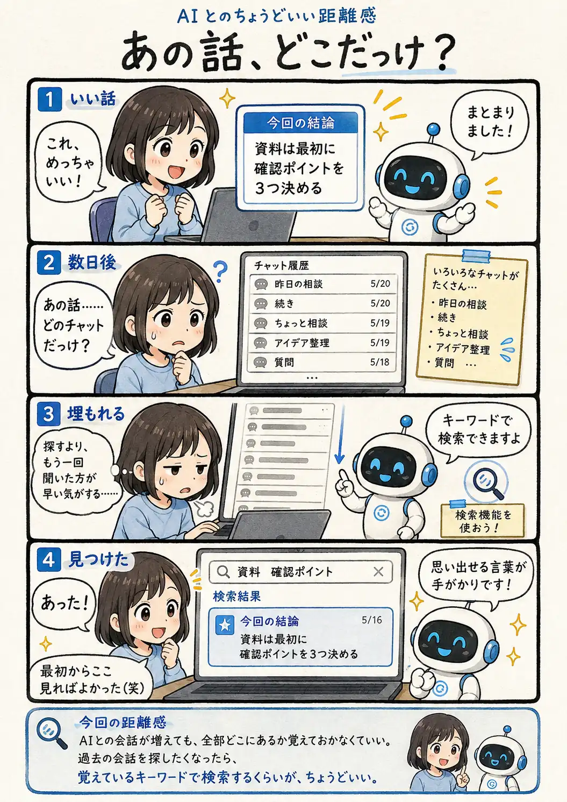

#110
あの話、どこだっけ？
確か、前にすごくいい話したんだけど……。

メモ
AIを日常的に使っていると、チャットは思った以上の速さで増えていきます。その場では「これは覚えておこう」と思った会話でも、数日後にはどのチャットだったか分からなくなることがあります。
そんな時は、一覧を一つずつ開かなくても、覚えている言葉から履歴を探せる場合があります。タイトルを覚えていなくても、会話に出てきた具体的なキーワードが手がかりになります。全部を整理しきろうとせず、必要になった時に検索して取り出す使い方も便利です。
今回の距離感
AIとの会話が増えても、全部どこにあるか覚えておかなくていい。過去の会話を探したくなったら、覚えているキーワードで検索するくらいが、ちょうどいい。